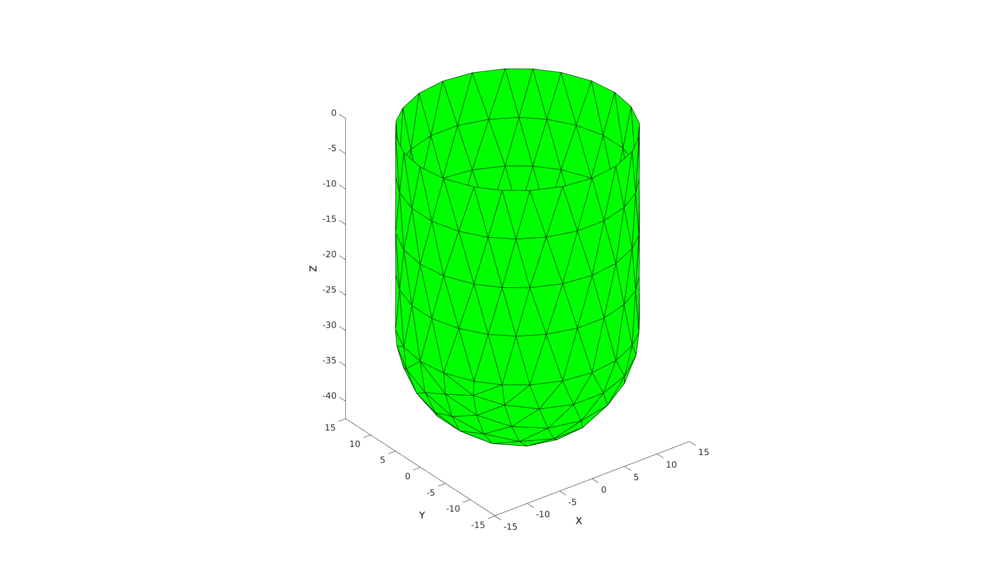
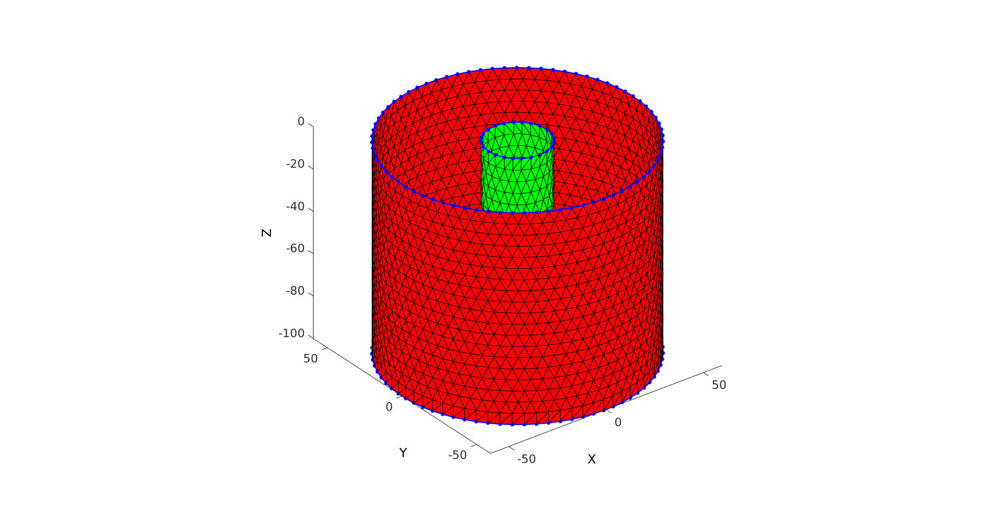
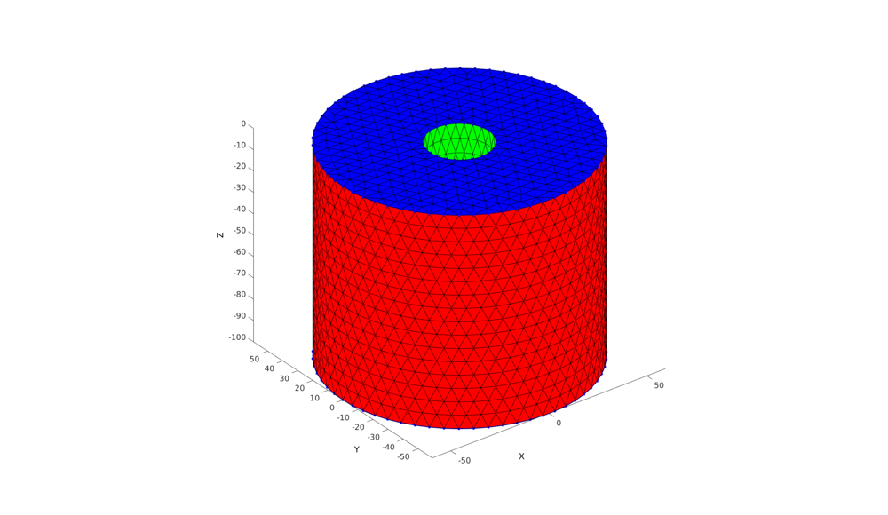
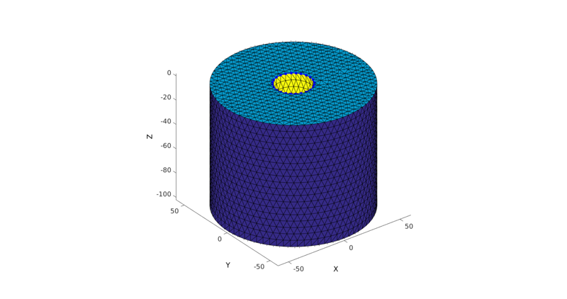
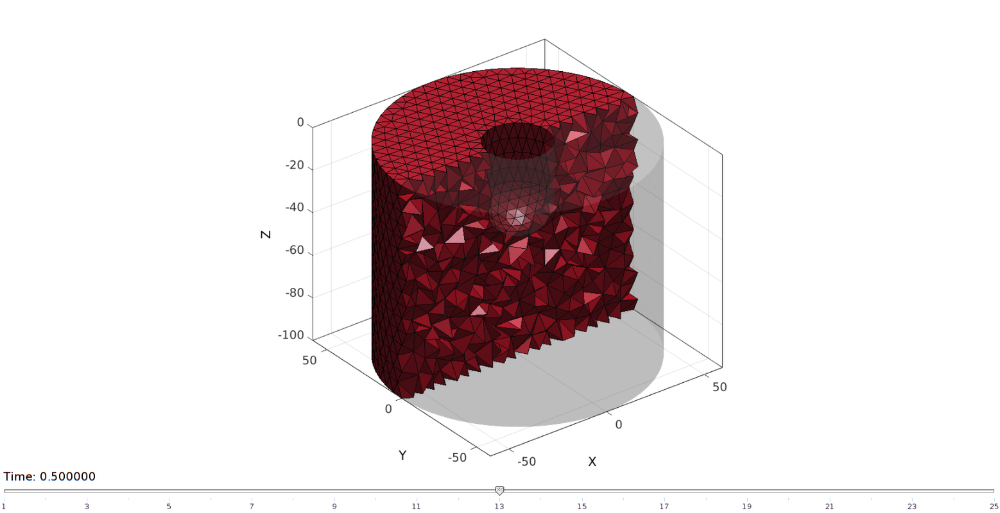
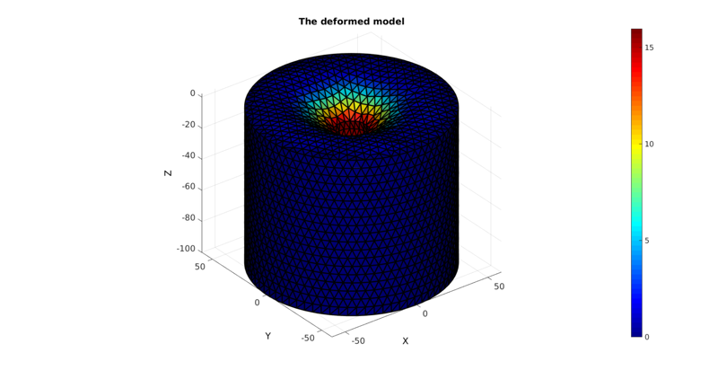
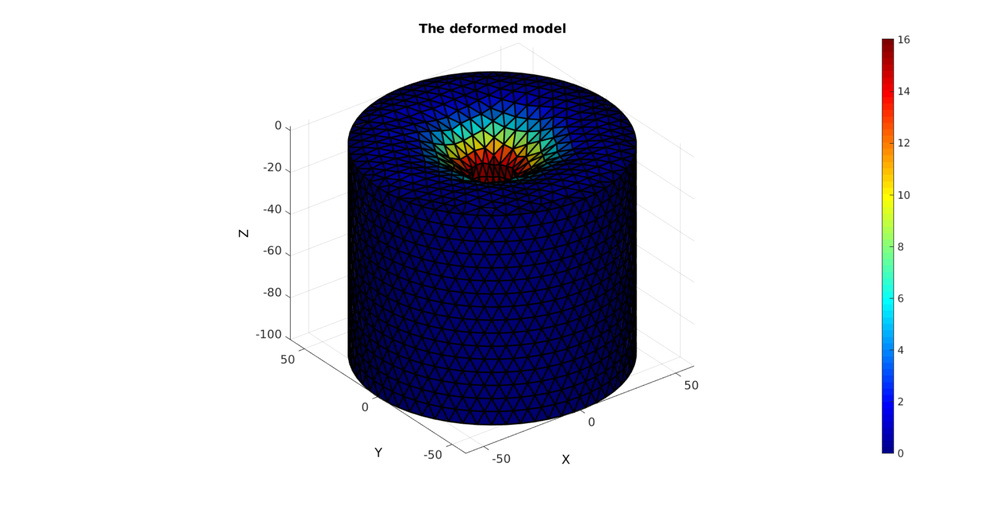

DEMO_FEBio_cylinder_embedded_indentor_01
Contents
clear; close all; clc;
Plot settings
fontSize=15;
faceAlpha=1;
lineWidth1=1.5;
lineWidth2=3;
markerSize1=15;
markerSize2=30;
edgeWidth=2;
edgeColor='k';
faceAlpha1=1;
path names
defaultFolder = fileparts(fileparts(mfilename('fullpath'))); savePath=fullfile(defaultFolder,'data','temp');
gelRadius=119/2; gelHeight=100; sphereRadius=30/2; % The radius of the hemi-spher portion nRefine=1; % Number of |subtri| refinements for icosahedron cylinderHeight=55/2; % height of the cylinder part pointSpacing=5; % Aproximate node spacing for cylinder portion displacementMagnitude=[0 0 -15];
Build indentor sphere
hemiStruct.sphereRadius=sphereRadius; %Sphere radius hemiStruct.nRefineRegions=nRefine; %Number of refinement steps for regions hemiStruct.nRefineMesh=1; %Number of refinement steps for mesh [F1,V1,~]=hemiSphereRegionMesh(hemiStruct); F1=fliplr(F1); %flip face orientation V1(:,3)=-V1(:,3); %Flip % Find hemi-sphere edge TR =triangulation(F1,V1); E = freeBoundary(TR); [indList]=edgeListToCurve(E);
Build indentor shaft
Vc=V1(indList(1:end-1),:); % Extruding model cPar.numSteps=round(cylinderHeight/pointSpacing); cPar.depth=cylinderHeight; cPar.patchType='tri'; cPar.dir=1; cPar.closeLoopOpt=1; [F2,V2]=polyExtrude(Vc,cPar);
Compose indentor
Vs=[V1;V2]; Fs=[F1;F2+size(V1,1);]; [~,ind1,ind2]=unique(pround(Vs,5),'rows'); Fs=ind2(Fs); Vs=Vs(ind1,:); Vs(:,3)=Vs(:,3)-max(Vs(:,3)); %Flip Fs=fliplr(Fs); %flip face orientation TR =triangulation(Fs,Vs); E = freeBoundary(TR); [indList]=edgeListToCurve(E); Vst=Vs(indList(1:end-1),:);
cFigure; xlabel('X','FontSize',fontSize); ylabel('Y','FontSize',fontSize); zlabel('Z','FontSize',fontSize) hold on; patch('Faces',Fs,'Vertices',Vs,'FaceColor','g','EdgeColor','k'); % hp=patchNormPlot(F,V,2); % patch('Faces',F1,'Vertices',V1,'FaceColor','g','EdgeColor','k'); % patch('Faces',F2,'Vertices',V2,'FaceColor','r','EdgeColor','k'); axis equal; view(3); axis tight; axis vis3d; grid off; set(gca,'FontSize',fontSize); drawnow;
Build gel
%Sketching profile ns=150; t=linspace(0,2*pi,ns); t=t(1:end-1); x=gelRadius*cos(t); y=gelRadius*sin(t); z=zeros(size(x)); Vc=[x(:) y(:) z(:)]; np=ceil(max(pathLength(Vc))./pointSpacing); [Vc]=evenlySampleCurve(Vc,np,'pchip',1); % Extruding model cPar.numSteps=round(gelHeight/pointSpacing); cPar.depth=gelHeight; cPar.patchType='tri'; cPar.dir=-1; cPar.closeLoopOpt=1; [Fg,Vg]=polyExtrude(Vc,cPar); Vgb=Vg(cPar.numSteps:cPar.numSteps:end,:); Vgt=Vg(1:cPar.numSteps:end,:); cFigure; xlabel('X','FontSize',fontSize); ylabel('Y','FontSize',fontSize); zlabel('Z','FontSize',fontSize) hold on; patch('Faces',Fs,'Vertices',Vs,'FaceColor','g','EdgeColor','k'); % hp=patchNormPlot(F,V,2); patch('Faces',Fg,'Vertices',Vg,'FaceColor','r','EdgeColor','k'); plotV(Vgb,'b.-','lineWidth',lineWidth1,'MarkerSize',markerSize1); plotV(Vgt,'b.-','lineWidth',lineWidth1,'MarkerSize',markerSize1); plotV(Vst,'b.-','lineWidth',lineWidth1,'MarkerSize',markerSize1); axis equal; view(3); axis tight; axis vis3d; grid off; set(gca,'FontSize',fontSize); drawnow;
Cap ends
regionCell={Vgt(:,[1 2]),Vst(:,[1 2])};
[Ft,Vt]=regionTriMesh2D(regionCell,pointSpacing,0,0);
Vt(:,3)=mean(Vgt(:,3));
patch('Faces',Ft,'Vertices',Vt,'FaceColor','b','EdgeColor','k');
regionCell={Vgb(:,[1 2])};
[Fb,Vb]=regionTriMesh2D(regionCell,pointSpacing,0,0);
Fb=fliplr(Fb); %flip face orientation
Vb(:,3)=mean(Vgb(:,3));
patch('Faces',Fb,'Vertices',Vb,'FaceColor','b','EdgeColor','k');
 Merge model
V=[Vg; Vt; Vb; Vs; ];
F=[Fg; Ft+size(Vg,1); Fb+size(Vg,1)+size(Vt,1); Fs+size(Vg,1)+size(Vt,1)+size(Vb,1); ];
C=[ones(size(Fg,1),1); 2*ones(size(Ft,1),1); 3*ones(size(Fb,1),1); 4*ones(size(Fs,1),1); ];
[~,ind1,ind2]=unique(pround(V,5),'rows');
F=ind2(F);
V=V(ind1,:);
cFigure; xlabel('X','FontSize',fontSize); ylabel('Y','FontSize',fontSize); zlabel('Z','FontSize',fontSize) hold on; patch('Faces',F,'Vertices',V,'FaceColor','flat','CData',C,'EdgeColor','k'); hp=patchNormPlot(F,V,2); plotV(Vst,'b.-','lineWidth',lineWidth1,'MarkerSize',markerSize1); axis equal; view(3); axis tight; axis vis3d; grid off; set(gca,'FontSize',fontSize); drawnow;
Mesh solid using tetgen
Create tetgen meshing input structure
modelName=fullfile(savePath,'tempModel'); % Regional mesh volume parameter [regionA]=tetVolMeanEst(F,V); %Volume for a regular tet based on edge lengths inputStruct.stringOpt='-pq1.2AaY'; inputStruct.Faces=F; inputStruct.Nodes=V; inputStruct.holePoints=[]; inputStruct.faceBoundaryMarker=C; %Face boundary markers inputStruct.regionPoints=[0 -50 -50]; %region points inputStruct.regionA=regionA*3; %Desired volume for tets inputStruct.minRegionMarker=2; %Minimum region marker inputStruct.modelName=modelName;
Mesh model using tetrahedral elements using tetGen (see: http://wias-berlin.de/software/tetgen/)
[meshOutput]=runTetGen(inputStruct); %Run tetGen
%%%%%%%%%%%%%%%%%%%%%%%%%%%%%%%%%%%%%%%%%%%%% --- TETGEN Tetrahedral meshing --- 11-Jul-2017 14:49:03 %%%%%%%%%%%%%%%%%%%%%%%%%%%%%%%%%%%%%%%%%%%%% --- Writing SMESH file --- 11-Jul-2017 14:49:03 ----> Adding node field ----> Adding facet field ----> Adding holes specification ----> Adding region specification --- Done --- 11-Jul-2017 14:49:03 --- Running TetGen to mesh input boundary--- 11-Jul-2017 14:49:03 Opening /mnt/data/MATLAB/GIT/GIBBON/lib_ext/tetGen/tempFiles/tempModel.smesh. Delaunizing vertices... Delaunay seconds: 0.076941 Creating surface mesh ... Surface mesh seconds: 0.00934 Recovering boundaries... Boundary recovery seconds: 0.016428 Removing exterior tetrahedra ... Spreading region attributes. Exterior tets removal seconds: 0.00679 Suppressing Steiner points ... Steiner suppression seconds: 1.9e-05 Recovering Delaunayness... Delaunay recovery seconds: 0.006808 Refining mesh... Refinement seconds: 0.237372 Optimizing mesh... Optimization seconds: 0.025718 Jettisoning redundant points. Writing /mnt/data/MATLAB/GIT/GIBBON/lib_ext/tetGen/tempFiles/tempModel.1.node. Writing /mnt/data/MATLAB/GIT/GIBBON/lib_ext/tetGen/tempFiles/tempModel.1.ele. Writing /mnt/data/MATLAB/GIT/GIBBON/lib_ext/tetGen/tempFiles/tempModel.1.face. Writing /mnt/data/MATLAB/GIT/GIBBON/lib_ext/tetGen/tempFiles/tempModel.1.edge. Output seconds: 0.077755 Total running seconds: 0.457421 Statistics: Input points: 2664 Input facets: 5324 Input segments: 7986 Input holes: 0 Input regions: 1 Mesh points: 7754 Mesh tetrahedra: 40726 Mesh faces: 84114 Mesh faces on exterior boundary: 5324 Mesh faces on input facets: 5324 Mesh edges on input segments: 7986 Steiner points inside domain: 5090 --- Done --- 11-Jul-2017 14:49:04 %%%%%%%%%%%%%%%%%%%%%%%%%%%%%%%%%%%%%%%%%%%%% --- Importing TetGen files --- 11-Jul-2017 14:49:04 --- Done --- 11-Jul-2017 14:49:04
Call TetView to view the model
runTetView(meshOutput.loadNameStruct.loadName_ele);
Access model element and patch data
F=meshOutput.faces; V=meshOutput.nodes; C=meshOutput.faceMaterialID; E=meshOutput.elements; elementMaterialID=meshOutput.elementMaterialID; Fb=meshOutput.facesBoundary; Cb=meshOutput.boundaryMarker;
Define boundary condition node sets
logicRigid= Cb==1 | Cb==3; indRigid=Fb(logicRigid,:); indRigid=unique(indRigid(:)); logicIndentor= Cb==4; indIndentor=Fb(logicIndentor,:); indIndentor=unique(indIndentor(:));
Plot boundary condition nodes
cFigure; xlabel('X','FontSize',fontSize); ylabel('Y','FontSize',fontSize); zlabel('Z','FontSize',fontSize) hold on; patch('Faces',Fb,'Vertices',V,'FaceColor','flat','CData',Cb,'EdgeColor','k'); plotV(V(indRigid,:),'r.','lineWidth',lineWidth1,'MarkerSize',markerSize1); plotV(V(indIndentor,:),'g.','lineWidth',lineWidth1,'MarkerSize',markerSize1); axis equal; view(3); axis tight; axis vis3d; grid off; set(gca,'FontSize',fontSize); drawnow;
% PLOTTING MODEL
%Selecting half of the model to see interior Y=V(:,2); YE=mean(Y(E),2); L=YE>mean(Y); [Fs,Cs]=element2patch(E(L,:),C(L),'tet4');
cFigure; subplot(1,2,1); title('Solid tetrahedral mesh model','FontSize',fontSize); xlabel('X','FontSize',fontSize); ylabel('Y','FontSize',fontSize); zlabel('Z','FontSize',fontSize); hold on; hps=patch('Faces',F,'Vertices',V,'FaceColor','flat','CData',C,'lineWidth',edgeWidth,'edgeColor',edgeColor); view(3); axis tight; axis equal; grid on; colormap(autumn); camlight headlight; set(gca,'FontSize',fontSize); subplot(1,2,2); title('Cut view of Solid tetrahedral mesh model','FontSize',fontSize); xlabel('X','FontSize',fontSize); ylabel('Y','FontSize',fontSize); zlabel('Z','FontSize',fontSize); hold on; hps=patch('Faces',Fs,'Vertices',V,'FaceColor','flat','CData',Cs,'lineWidth',edgeWidth,'edgeColor',edgeColor); view(3); axis tight; axis equal; grid on; colormap(autumn); camlight headlight; set(gca,'FontSize',fontSize); drawnow;
CONSTRUCTING FEB MODEL
FEB_struct.febio_spec.version='2.0'; FEB_struct.Module.Type='solid'; % Defining file names FEB_struct.run_filename=[modelName,'.feb']; %FEB file name FEB_struct.run_logname=[modelName,'.txt']; %FEBio log file name %Creating FEB_struct FEB_struct.Geometry.Nodes=V; FEB_struct.Geometry.Elements={E}; %The element sets FEB_struct.Geometry.ElementType={'tet4'}; %The element types FEB_struct.Geometry.ElementMat={ones(size(E,1),1)}; FEB_struct.Geometry.ElementsPartName={'Phantom'}; % DEFINING MATERIALS c1=1e-3; k=c1*1e3; FEB_struct.Materials{1}.Type='Mooney-Rivlin'; FEB_struct.Materials{1}.Name='gel_mat'; FEB_struct.Materials{1}.Properties={'c1','c2','k'}; FEB_struct.Materials{1}.Values={c1,0,k}; %Control section FEB_struct.Control.AnalysisType='static'; FEB_struct.Control.Properties={'time_steps','step_size',... 'max_refs','max_ups',... 'dtol','etol','rtol','lstol'}; n=40; FEB_struct.Control.Values={n,1/n,... 25,0,... 0.001,0.01,0,0.9}; FEB_struct.Control.TimeStepperProperties={'dtmin','dtmax','max_retries','opt_iter','aggressiveness'}; FEB_struct.Control.TimeStepperValues={(1/n)/100,1/n,5,10,1}; %Defining node sets FEB_struct.Geometry.NodeSet{1}.Set=indRigid; FEB_struct.Geometry.NodeSet{1}.Name='indRigid'; FEB_struct.Geometry.NodeSet{2}.Set=indIndentor; FEB_struct.Geometry.NodeSet{2}.Name='indIndentor'; %Adding BC information FEB_struct.Boundary.Fix{1}.bc='x'; FEB_struct.Boundary.Fix{1}.SetName=FEB_struct.Geometry.NodeSet{1}.Name; FEB_struct.Boundary.Fix{2}.bc='y'; FEB_struct.Boundary.Fix{2}.SetName=FEB_struct.Geometry.NodeSet{1}.Name; FEB_struct.Boundary.Fix{3}.bc='z'; FEB_struct.Boundary.Fix{3}.SetName=FEB_struct.Geometry.NodeSet{1}.Name; FEB_struct.Boundary.Prescribe{1}.Set=indIndentor; FEB_struct.Boundary.Prescribe{1}.bc='x'; FEB_struct.Boundary.Prescribe{1}.lc=1; FEB_struct.Boundary.Prescribe{1}.nodeScale=displacementMagnitude(ones(numel(indIndentor),1),1); FEB_struct.Boundary.Prescribe{1}.Type='relative'; FEB_struct.Boundary.Prescribe{1}.Set=indIndentor; FEB_struct.Boundary.Prescribe{1}.bc='y'; FEB_struct.Boundary.Prescribe{1}.lc=1; FEB_struct.Boundary.Prescribe{1}.nodeScale=displacementMagnitude(ones(numel(indIndentor),1),2); FEB_struct.Boundary.Prescribe{1}.Type='relative'; FEB_struct.Boundary.Prescribe{1}.Set=indIndentor; FEB_struct.Boundary.Prescribe{1}.bc='z'; FEB_struct.Boundary.Prescribe{1}.lc=1; FEB_struct.Boundary.Prescribe{1}.nodeScale=displacementMagnitude(ones(numel(indIndentor),1),3); FEB_struct.Boundary.Prescribe{1}.Type='relative'; %Load curves FEB_struct.LoadData.LoadCurves.id=1; FEB_struct.LoadData.LoadCurves.type={'linear'}; FEB_struct.LoadData.LoadCurves.loadPoints={[0 0;1 1;]}; %Adding output requests FEB_struct.Output.VarTypes={'displacement','stress','relative volume'}; %Specify log file output run_node_output_name=[FEB_struct.run_filename(1:end-4),'_node_out.txt']; FEB_struct.run_output_names={run_node_output_name}; FEB_struct.output_types={'node_data'}; FEB_struct.data_types={'ux;uy;uz'};
SAVING .FEB FILE
FEB_struct.disp_opt=0; %Display waitbars option
febStruct2febFile(FEB_struct);
%%%%%%%%%%%%%%%%%%%%%%%%%%%%%%%%%%%%%%%%%%%%% --- Writing FEBio XML object --- 11-Jul-2017 14:49:05 Adding Module level Adding Control level Adding Globals level Adding Material level Adding Geometry level ----> Adding node field ----> Adding element field ----> Adding tet4 element entries.... ----> Adding NodeSet field Adding Boundary level ----> Defining fix type boundary conditions ----> Defining prescribe type boundary conditions Adding LoadData level ----> Defining load curves Adding Output level ----> Adding plotfile field ----> Adding logfile field Warning: Provided path of logfile is replaced by .feb file path. Only provide filename to avoid this warning Writing .feb file --- Done --- 11-Jul-2017 14:49:10
RUNNING FEBIO JOB
% FEBioRunStruct.FEBioPath='C:\Program Files\febio2-2.2.6\bin\febio2.exe'; FEBioRunStruct.run_filename=FEB_struct.run_filename; FEBioRunStruct.run_logname=FEB_struct.run_logname; FEBioRunStruct.disp_on=1; FEBioRunStruct.disp_log_on=1; FEBioRunStruct.runMode='external';%'internal'; FEBioRunStruct.t_check=0.25; %Time for checking log file (dont set too small) FEBioRunStruct.maxtpi=1e99; %Max analysis time FEBioRunStruct.maxLogCheckTime=3; %Max log file checking time [runFlag]=runMonitorFEBio(FEBioRunStruct);%START FEBio NOW!!!!!!!!
%%%%%%%%%%%%%%%%%%%%%%%%%%%%%%%%%%%%%%%%%%%%% --- STARTING FEBIO JOB --- 11-Jul-2017 14:49:10 Waiting for log file... Proceeding to check log file...11-Jul-2017 14:49:11 ------- converged at time : 0.025 ------- converged at time : 0.05 ------- converged at time : 0.075 ------- converged at time : 0.1 ------- converged at time : 0.125 ------- converged at time : 0.15 ------- converged at time : 0.175 ------- converged at time : 0.2 ------- converged at time : 0.225 ------- converged at time : 0.25 ------- converged at time : 0.275 ------- converged at time : 0.3 ------- converged at time : 0.325 ------- converged at time : 0.35 ------- converged at time : 0.375 ------- converged at time : 0.4 ------- converged at time : 0.425 ------- converged at time : 0.45 ------- converged at time : 0.475 ------- converged at time : 0.5 ------- converged at time : 0.525 ------- converged at time : 0.55 ------- converged at time : 0.575 ------- converged at time : 0.6 ------- converged at time : 0.625 ------- converged at time : 0.65 ------- converged at time : 0.675 ------- converged at time : 0.7 ------- converged at time : 0.725 ------- converged at time : 0.75 ------- converged at time : 0.775 ------- converged at time : 0.8 ------- converged at time : 0.825 ------- converged at time : 0.85 ------- converged at time : 0.875 ------- converged at time : 0.9 ------- converged at time : 0.925 ------- converged at time : 0.95 ------- converged at time : 0.975 ------- converged at time : 1 --- Done --- 11-Jul-2017 14:50:30
IMPORTING NODAL DISPLACEMENT RESULTS
Importing nodal displacements from a log file
[~, N_disp_mat,~]=importFEBio_logfile(FEB_struct.run_output_names{1}); %Nodal displacements
DN=N_disp_mat(:,2:end,end); %Final nodal displacements
CREATING NODE SET IN DEFORMED STATE
V_def=V+DN; DN_magnitude=sqrt(sum(DN.^2,2));
Plotting the deformed model
[CF]=vertexToFaceMeasure(F,DN_magnitude); cFigure; title('The deformed model','FontSize',fontSize); xlabel('X','FontSize',fontSize); ylabel('Y','FontSize',fontSize); zlabel('Z','FontSize',fontSize); hold on; hps=patch('Faces',F,'Vertices',V_def,'FaceColor','flat','CData',CF,'lineWidth',edgeWidth,'edgeColor',edgeColor,'FaceAlpha',faceAlpha1); view(3); axis tight; axis equal; grid on; colormap jet; colorbar; camlight headlight; set(gca,'FontSize',fontSize); drawnow;

GIBBON www.gibboncode.org
Kevin Mattheus Moerman, gibbon.toolbox@gmail.com